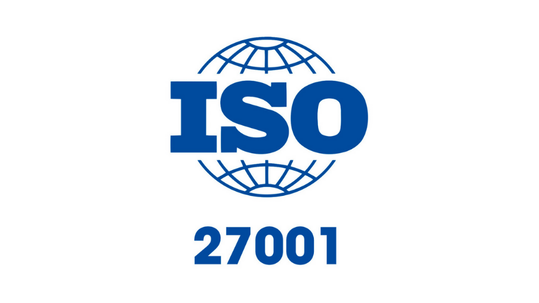
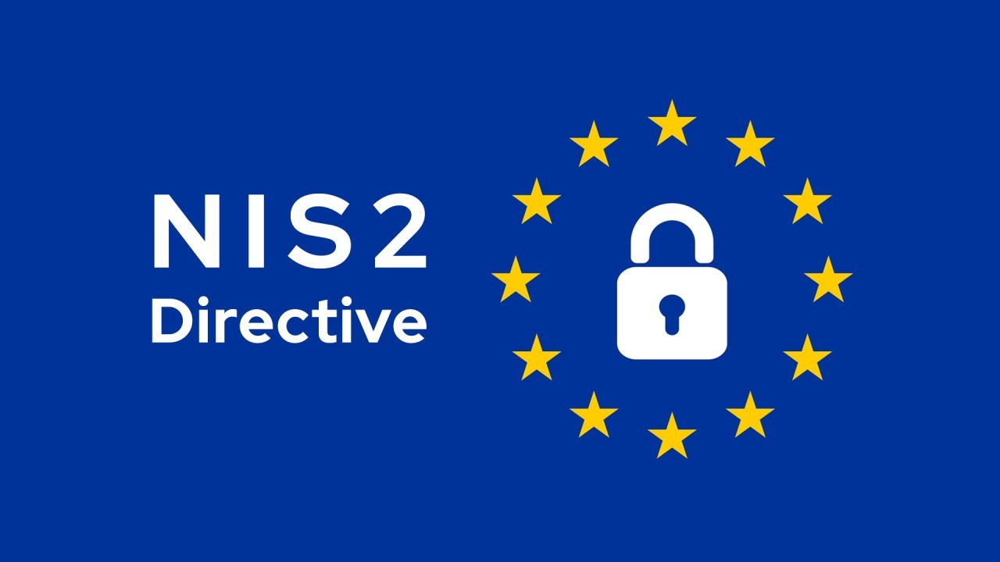
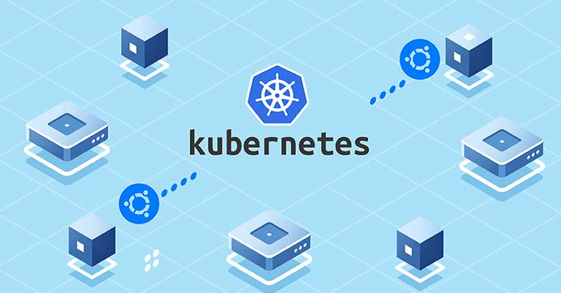
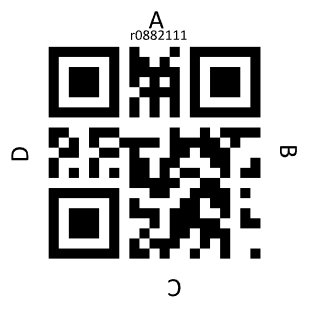
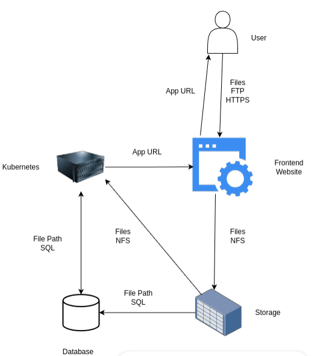
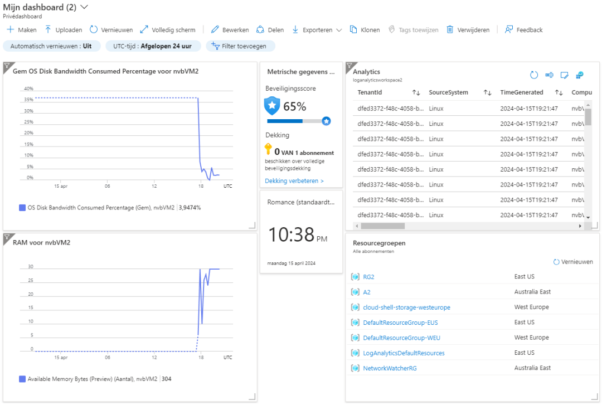
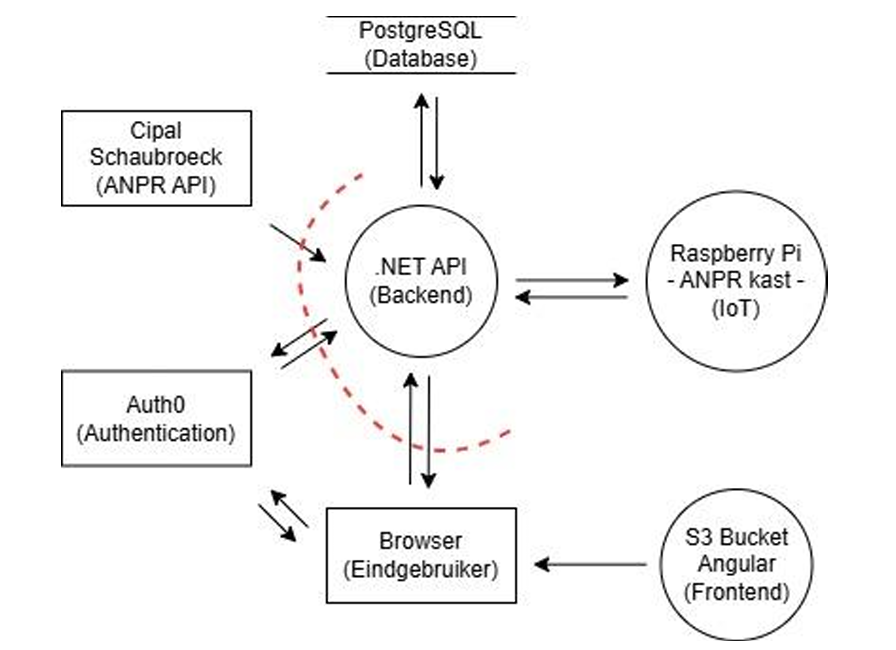
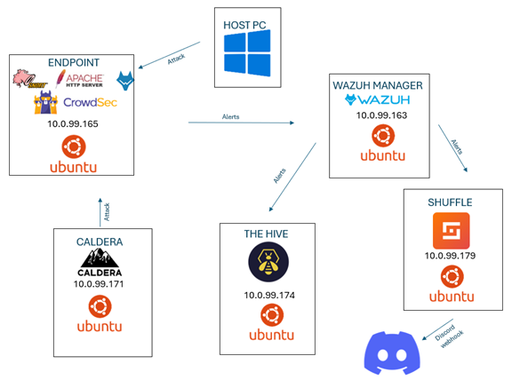

MIJN PORTFOLIO
De leidraad voor mijn professionele carrière
Hallo, mijn naam is Nalani Van Beemen en ik verwelkom je op mijn online portfolio. Hier vind je een gedetailleerd overzicht van mijn professionele traject, projecten en vaardigheden. In de loop der jaren ben ik verschillende uitdagingen aangegaan en heb ik waardevolle ervaringen opgedaan.
Benieuwd naar mijn persoonlijk leven? Neem dan zeker een kijkje op mijn Pinterestbord! Dit bord biedt een beter inzicht in wie ik ben en wat mijn persoonlijke interesses zijn.
PinterestbordOver mij
Op de middelbare school volgde ik de richting Ondernemerschap & IT. Dit was het ideale combinatie voor mij, ik was erg geïnteresseerd in ondernemen en marketing, maar ik wilde ook de ICT-wereld leren kennen. En dat beviel me, zo koos ik opnieuw voor deze optie. Dus in september 2021 begon ik Elektronica-ICT te studeren aan Thomas More. Hier maakte ik kennis met systemen, netwerken en beveiliging. Ik voelde al snel dat ik verder wilde in beveiliging. Dus koos ik voor Cloud & Cybersecurity, en ik genoot ten volle van deze richting. Daarom wil ik terugkijken op dit traject in mijn portfolio.
Deze specialisatie heeft me de unieke kans gegeven om een breed scala aan onderwerpen te verkennen. Op deze manier heb ik kennis van verschillende onderwerpen die ik nu samen kan gebruiken. Ik haal enorm veel voldoening uit het verwerven van kennis vanuit verschillende perspectieven, en sta altijd open om bij te leren.
Ik blijf dit portfolio aanvullen naarmate ik nieuwe vaardigheden ontwikkel. Houd dit dus in de gaten voor mijn verdere ontwikkeling!
- LinkedIn: nalani-van-beemen
- Telefoonnummer: +32 477 42 06 90
- Woonplaats: Antwerpen
- Leeftijd: 22
- Diploma: Cloud & CyberSecurity
- Email: vanbeemenn@gmail.com
💻 Hard Skills
- AWS, Azure
- Linux, Windows
- Networking
- (OS) Security
- Java, Python
- Scrum, Agile, ITIL
- HTML, CSS, SQL
- Office 365
🧠 Soft Skills
- Stress bestendig
- Planner
- Verantwoordelijkheid
- Communicatief
- Teamspeler
- Gemotiveerd
- Nederlands - moedertaal
- Engels - gevorderd
Als je meer over mij wilt weten, bekijk dan zeker mijn CV!
Download CVMIJN EINDSTAGE
Van theorie naar praktijk
Tijdens mijn opleiding kreeg ik de kans om gedurende 13 weken mijn opgedane kennis in de praktijk om te zetten. Deze stage bood me de mogelijkheid om het echte werkleven te ervaren en waardevolle professionele ervaring op te doen.
Infosentry
Ik heb de waardevolle kans gekregen om mijn stage uit te voeren bij Infosentry, een bedrijf gevestigd in Niel en onderdeel van De Cronos Groep. Infosentry is gespecialiseerd in informatiebeveiliging, privacy en business continuity. Het bedrijf ondersteunt organisaties bij het beheersen van cyberrisico’s, het verhogen van hun maturiteit en het voldoen aan internationale standaarden en veranderende wet- en regelgeving. Zo helpt Infosentry bedrijven bijvoorbeeld bij het behalen van een ISO 27001-certificering. Tijdens mijn stage word ik begeleid door Stijn Cornelis, Security Compliance Lead bij Infosentry. Hij adviseert en ondersteunt klanten bij trajecten rond ISO 27001, NIS2 en GDPR. Daarnaast begeleidt hij nieuwe medewerkers en stagiairs binnen het bedrijf. Als mijn mentor zal hij mij gedurende mijn stageperiode ondersteunen en begeleiden.
Deze stage was voor mij een van de meest waardevolle ervaringen binnen mijn opleiding. Ik krijg de kans om de praktijk van dichtbij te ervaren en mijn intresses ten volle te ontdekken. Dit traject gaf me niet alleen nieuwe inzichten, maar hielp me om beter te begrijpen welke richting ik in de toekomst uit wil. Dankzij deze stage heb ik ondekt welke richting ik uit wil in mijn carrière.
Graag wil ik van deze gelegenheid gebruik maken om Infosentry in het bijzonder te bedanken. Vanaf mijn eerste dag werd ik warm verwelkomd in een geweldig team. Mijn stageperiode was niet alleen leerrijk, maar ook bijzonder aangenaam. Ik kijk met veel voldoening en dankbaarheid terug op deze waardevolle ervaring.
Praktijk
Automated compliance tools
Automated compliance tools zijn softwareoplossingen die organisaties helpen om op een efficiënte en gestructureerde manier te voldoen aan wet- en regelgeving, zoals ISO 27001, GDPR, NIS2, en andere normen rond informatiebeveiliging en privacy. In plaats van handmatig documenten, controles, risicoanalyses en audits te beheren, bieden deze tools een gecentraliseerd platform dat: taken automatiseert, real-time inzicht en integraties ondersteund met bestaande systemen.
In een steeds complexer wordende regelgeving staan bedrijven, ongeacht hun grootte, voor de uitdaging om te voldoen aan strikte compliance-eisen. Normen zoals ISO 27001, NIS2 en GDPR zijn kaders en regels die organisaties verplichten om informatie en persoonsgegevens te beveiligen tegen risico’s, met respect voor privacy en met aandacht voor cyberweerbaarheid — en vereisen niet alleen naleving, maar ook voortdurende monitoring en documentatie. Dit proces is tijdrovend, foutgevoelig en kan aanzienlijke kosten met zich meebrengen. Automated compliance tools beloven een oplossing te bieden door compliance-processen te automatiseren, risico’s te verminderen en organisaties efficiënter te laten werken.
Voor KMO’s is de investering in een geautomatiseerde compliance-oplossing echter niet vanzelfsprekend. De implementatie van dergelijke tools brengt kosten en complexiteit met zich mee, waardoor de onderzoeksvraag luidt als volgt:


"Is het interessant voor KMO’s om te investeren in automated compliance tools? Vanaf wanneer is er een Return on Investment (ROI)?"
De aanleiding voor deze onderzoeksvraag ligt in de concrete situatie van mijn stagebedrijf, Infosentry. Ze telt 25 medewerkers en overweegt momenteel de overstap naar het automatiseren van zijn complianceprocessen. Voor een kleinere organisatie vormt dit echter een aanzienlijke investering, die onderbouwd moet worden met duidelijke inzichten in de kosten en besparingen op termijn. Vanuit die situatie ontstond de centrale onderzoeksvraag.
Daarnaast onderhoudt Infosentry een partnership met een van de automated compliance tools die in deze studie worden geanalyseerd. Om (potentiële) klanten te overtuigen van de meerwaarde van deze tool, is het belangrijk om over onderbouwde informatie te beschikken. Dit onderzoek wil daarom niet alleen een theoretisch kader bieden, maar ook een praktisch en financieel onderbouwd antwoord formuleren op de centrale vraagstelling.
Samenvattend
Dit hele traject heeft zich in verschillende fasen afgespeeld. Ik ben gestart met het opstellen van een projectplan, waarin ik het traject heb geanalyseerd en duidelijke doelen heb vastgesteld. Na deze analyse ben ik begonnen met de realisatie van het project; hoe dit is verlopen kunt u terugvinden in het realisatiedocument. Dit document bevat uiteraard ook het antwoord op de centrale onderzoeksvraag. Naast deze onderzoeksvraag heb ik nog veel meer bijgeleerd en nieuwe ervaringen opgedaan, dit deel ik graag in het document ‘Aanvullende opdrachten’. Tot slot is er een reflectiedocument opgenomen waarin ik mijn beleving van deze periode beschrijf.
Download Projectplan Download Realisatiedocument Download Aanvullende opdrachten Download ReflectieProjecten
Hieronder vind je een lijst met projecten die ik tijdens mijn schoolcarrière heb voltooid. Dit zijn de projecten waar ik het meest trots op ben en waar ik het meeste van heb geleerd. Bij elk project is de volledige documentatie terug te vinden in pdf-vorm.
Succesvolle projecten
Milestone 2: Een “gerandomiseerde” webstack draaien op een Kubernetes-cluster
Dit was een individueel project.
In dit project moesten we ons eigen Kubernetes-cluster maken en een webstack implementeren. De basisopdracht bestond uit:
- een lighttpd frontend webserver met javascript
- een API geïmplementeerd met nodejs
- MongoDB database
Ik heb deze opdracht verder uitgewerkt met:
- gebruik van Vagrant om k8s-machines op te zetten
- persistent volume
Dit was een erg moeilijk project waar ik veel tijd in heb gestoken. Kubernetes is niet zo eenvoudig om te leren. Maar ik ben erg blij dat het me toch gelukt is om dit zo ver mogelijk te brengen. Ik was erg tevreden nadat ik dit project had afgerond, ik heb een zeer waardevolle vaardigheid geleerd.

Quiz met qr codes
Dit was een groepsproject.
De basis van dit project is vergelijkbaar met Kahoot! Met Kahoot! kun je gemakkelijk quizzen afnemen van grote groepen, bijvoorbeeld in een klas. We hebben een variant gemaakt waarbij leerlingen geen elektronica gebruiken. Ze geven hun antwoord door een qr-code op een bepaalde manier in de lucht te steken (zie afbeelding). Vervolgens begint de leerkracht al deze qr-codes te scannen. De antwoorden volgen elkaar op in een database en hieruit kunnen ook statistieken worden weergegeven. Je kunt hier meer uitleg downloaden.
In dit project heb ik samen met iemand anders uit mijn groep de qr-codes gecodeerd. Dit was in Python. Ik heb ook een script gemaakt voor een eenvoudige manier om qr-codes te maken voor een hele groep, ook in Python.
Dit was een erg leuk project om te doen, waarbij ons teamwork optimaal was.

Hosting platform
Dit was een groepsproject.
In ons tweede jaar hebben we een groot project gekregen, het bouwen van een hostingplatform. Dit hostingplatform is bedoeld om zelf een php-website te hosten, we doen dit in een groep van vijf.
Dit was een zeer uitdagend project waarbij verschillende technologieën en systemen gebruikt werden. We zijn hier dan ook een volledig semester mee bezig geweest. Ik heb mij toegelegd op het bouwen van de website in combinatie met uit uitwerken van de API, uiteraard kwamen er nog veel andere taken bij kijken, deze kan u terugvinden in ons eind doucment.
De opdracht was bijzonder uitdagend, zowel inhoudelijk als op groepsvlak. De complexiteit van de taak vroeg veel technische inspanning en doorzettingsvermogen, daarnaast ervaarden we ook veel spanningen binnenin ons team. Het was een leerzame ervaring waarin we niet alleen onze technische skills, maar ook onze samenwerking en stressbestendigheid op de proef stelden.

Logging & backup naar Azure
Dit was een individueel project.
Dit project is gemaakt in Azure. Hier heb ik een virtuele machine opgezet die informatie doorstuurt naar een Azure Monitor. We doen dit om het gedrag van de virtuele machine nauwlettend in de gaten te houden.
Het technische aspect van de taak. Ik heb een Linux virtuele machine gemaakt waarvan ik de syslog & perormance statistieken in een duidelijk overzicht wil zien. Ik heb dit gedaan met behulp van een log analytics workspace en Azure monitor.
Het was een zeer informatief project. Het was leuk om Azure te verkennen en erin te werken.
De stap-voor-stap procedure vind je onderaan in pdf-formaat.

ANPR monitoring
Dit was een groepsproject.
De opdracht richt zich op het verbeteren en uitbreiden van de functionaliteiten van ANPR-camera’s, met bijzondere aandacht voor de monitoring en het beheer ervan. Momenteel worden via het bestaande monitoringsysteem (Zabbix) een grote hoeveelheid meldingen gegenereerd, maar ontbreekt het aan een effectieve classificatie en prioritering van deze meldingen. Dit zorgt ervoor dat belangrijke of kritieke problemen niet altijd de benodigde aandacht krijgen en dat beheerders worden overspoeld met meldingen die niet direct actie vereisen.
Ons doel is om dit proces te optimaliseren door de meldingen te filteren en te structureren op basis van prioriteit. We willen een duidelijk onderscheid maken tussen kritieke problemen, die onmiddellijke aandacht vereisen, en minder urgente kwesties, zodat de beheerders efficiënt kunnen handelen.
Mijn bijdrage aan dit project bestond uit het veilig opzetten van de volledige infrastructuur. Samen met mijn medestudent Cloud & Cybersecurity was ik verantwoordelijk voor het inrichten van onze cloudomgeving in AWS en het organiseren van de dataflow binnen het systeem. Daarnaast heb ik me specifiek toegelegd op het uitwerken van geautomatiseerde pipelines, met als doel de werking van het systeem zo efficiënt en onderhoudsvriendelijk mogelijk te maken.


Download PDFSecurity Operations Center (SOC)
Dit was een individueel project.
In mijn laatste jaar ontwikkelde ik een volledig functioneel mini-SOC op basis van Ubuntu 20.04 virtuele machines. De opstelling draait in ons eigen datacenter. Er worden handmatige en geautomatiseerde aanvallen uitgevoerd, deze worden vervolgens gedetecteerd en gemonitord. Ook werd er een gepaste incident response voorzien door The hive en werden automatische alerts rondgestuurd.
Opstelling & Tools:
- Endpoint met: Apache2 webserver, Wazuh agent, Snort IDS, CrowdSec.
- SIEM: Wazuh Manager als centraal dashboard.
- Incident Response: Integratie met The Hive voor casebeheer.
- Automatisatie: Shuffle workflow voor automatisch alerts Discord-webhook.
Aanvallen & Detectie:
- Handmatige aanval: Nmap-poortscan via Zenmap.
- Geautomatiseerde aanval: MITRE Caldera past inhoud webpagina aan.
- Detectie: door Snort en Wazuh, en geautomatiseerd gelogd en verwerkt.
Extra beveiligingslagen:
- Zelfgeschreven Snort-regels voor detectie van specifieke aanvalspatronen.
- CrowdSec blokkeert verdachte IP-adressen tijdelijk of permanent.
Resultaat:Het SOC detecteert aanvallen in real-time, stuurt alerts naar meerdere platformen, en visualiseert incidenten via The Hive. Via Shuffle worden meldingen ook doorgestuurd naar Discord, wat continue monitoring mogelijk maakt – zelfs buiten het dashboard.